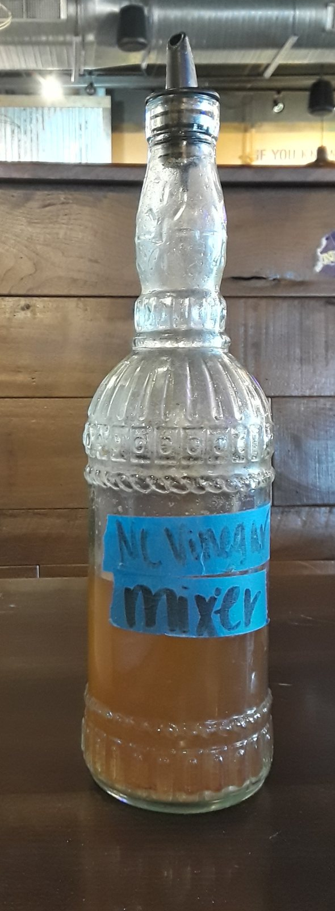

also: eastern sauce · Eastern North Carolina sauce · East Carolina sauce · pepper vinegar · vinegar sauce
In the east it is 'the sauce' or just 'vinegar'; Brown's in Kingstree calls its own 'barbecue gravy'.

Bottle of vinegar for the table — Ser Amantio di Nicolao, CC0 1.0
Vinegar — cider or white — with salt, black pepper and crushed red pepper, and nothing else in its plainest form; some houses add sugar, a bottled hot sauce or lemon. It is thin enough to pour, tart, and as hot as the cook likes. It is the sauce of whole-hog barbecue on the Coastal Plain of both Carolinas, from Rocky Mount to the Pee Dee and the coast: used as a mop while the hog cooks, tossed through the chopped meat at the block, and set on the table for more. Wikipedia's history of barbecue sauce calls it the earliest American barbecue sauce and the root of most of the others.
The story Cited · wp-barbecue-sauce
Early home barbecue sauces were vinegar, salt and pepper, and stayed so until sugar, ketchup and Worcestershire came in during the 1920s. The sauce of the eastern Carolinas, Wikipedia says, was popularised by enslaved African cooks who also shaped American barbecue itself; the South Carolina tourism office calls vinegar-and-pepper 'the oldest sauce, perhaps the oldest in the nation'; the South Carolina Barbeque Association gives it the coastal plains of both Carolinas and a share in Virginia and Georgia. Tradition holds — vinegar was the English kitchen's preservative and its seasoning, and the sauce is what that kitchen did to a pig.
Its recipes are short. Ed Mitchell of Wilson uses apple cider vinegar, crushed red pepper, salt, sugar and black pepper. Skylight Inn dresses its chop with vinegar, salt, pepper and Texas Pete. Russell Cooper at Cooper's Country Store calls his 'downright vinegar and salt and pepper', with black, crushed and ground red pepper in it. Adam Scott of Goldsboro sold his from 1917, and his son patented it in 1946 as a sugar-free, fat-free bottle — 'Daddy never believed in putting sweet stuff on meat'. Rodney Scott's Charleston restaurant serves whole hog with a 'spicy vinegar sauce'. What none of them contains is tomato, and that absence is the whole of the east's argument with Lexington: Dennis Rogers of the Raleigh News & Observer said of the sauce, 'It doesn't need anything else'.
How it is done Tradition
Stir salt into vinegar until it dissolves, add black pepper and crushed red pepper, and let it sit; heat is optional. On a whole hog it is mopped on in the last hours or not at all — many pits season only at the block — and the chopped meat, skin and all, is tossed with it and salt until it tastes right. On the tray it sits in a squeeze bottle or a shaker beside the Texas Pete. It soaks into chopped meat and cuts the fat; it is not a glaze and does not thicken.
Today Cited · web-texas-pete-eastern-carolina
Every eastern pit has its own. Bottled versions include Scott's of Goldsboro, sold in Harris Teeter and Food Lion, and Texas Pete's own Eastern Carolina BBQ Sauce, which lists apple cider vinegar, tomato paste, red pepper flakes and sugar — a tomato paste the tradition's own recipes leave out.
recipe · Wikibooks Cookbook, from the contributor's friend and brother Chip Crumpler, NC
vinegar
#1 on the label
tomato
—
mustard
—
sugar
#5 on the label
the label, in order
apple cider vinegar, salt, ground black pepper, red pepper flakes, molasses, honey
Read from this page, 2026-09-16. Measured from a recipe, not a bottle: six ingredients, vinegar first, no tomato and no mustard, with the sweetening at position five. The recipe gives volumes but no Nutrition Facts, so the per-tablespoon figures are null. Of the 68 bottles in data/harvest/sauces.json, four label a vinegar sauce with no tomato at all: Scott's of Goldsboro, Brookwood Farms of Siler City, True Made Foods' E. Carolina, and Lillie's Q No. 12. Every bottle we have read is on the sauce page.
Recipes you may use
Public-domain cookbooks are printed here in full, spelling and all. Where a recipe is still in copyright, the page gives the ingredients — a list of what goes in is a fact — and links to the rest.
Eastern North Carolina Barbecue Sauce
Wikibooks Cookbook · read 16 September 2026 · source · CC BY-SA 4.0
¾ gallons apple cider vinegar
⅛ cup salt
¼ cup ground black pepper
¼ cup red pepper flakes
1 cup molasses
2 cups honey
1. Start with apple cider vinegar in saucepan over medium heat.
2. Add salt, ground black pepper, crushed red pepper, molasses, and honey.
3. Let mixture heat up, but not quite boil.
4. Mix well.
5. Return sauce to the jug that the vinegar came in to cool.
Makes ¾ gallon.
Cider vinegar, salt, black pepper and red pepper flakes, with molasses and honey for sweetening; three quarters of a gallon at a time, returned to the vinegar jug to cool.
Pepper Vinegar
Mrs. Mary Randolph · The Virginia House-Wife · 1824 · p. 163 · source · Public domain
Get one dozen pods of pepper when ripe, take out the stems, and cut them in two; put them in a kettle with three pints of vinegar, boil it away to one quart, and strain it through a sieve. A little of this is excellent in gravy of every kind, and gives a flavour greatly superior to black pepper; it is also very fine when added to each of the various catsups for fish sauce.
The sauce's oldest written part: a dozen ripe pepper pods boiled down in vinegar until a quart is left. Printed in the first cookbook of the American South, under the condiments rather than the barbecue.
To Barbecue Shoat
Mrs. Lettice Bryan · The Kentucky Housewife · 1839 · p. 95–96 · source · Public domain
Take either a hind or fore quarter, rub it well with salt, pepper, and a small portion of molasses, and if practicable, let it lie for a few hours; then rinse it clean, and wipe it dry with a cloth, and place it on a large gridiron, over a bed of clear coals. Do not barbecue it hastily, but let it cook slowly for several hours, turning it over occasionally, and basting it with nothing but a little salt-water and pepper, merely to season and moisten it a little. When it is well done, serve it without a garnish, and having the skin taken off, which should be done before it is put down to roast, squeeze over it a little lemon juice, and accompany it with melted butter and wine, bread sauce, raw sallad, slaugh, or cucumbers, and stewed fruit. Beef may be barbecued in the same manner.
The plainest eastern mop in print, 1839: the meat is basted 'with nothing but a little salt-water and pepper, merely to season and moisten it a little.'
Sauce for Barbecues (receipt 335)
Mrs. A. P. Hill · Mrs. Hill's New Cook-Book · 1867 · p. 171 · source · Public domain
Melt half a pound of butter; stir into it a large tablespoonful of mustard, half a teaspoonful of red pepper, one of black, salt to taste; add vinegar until the sauce has a strong acid taste. The quantity of vinegar will depend upon the strength of it. As soon as the meat becomes hot, begin to baste, and continue basting frequently until it is done; pour over the meat any sauce that remains.
Vinegar, salt and both peppers, with butter and mustard added — the Georgia mop of 1867, between the eastern vinegar sauce and the South Carolina mustard one.
Not to be confused with
Lexington dip — Hold it to the light: clear or pale amber with pepper flakes is vinegar-and-pepper; any red tint is dip or light tomato.
Holy Smoke: The Big Book of North Carolina Barbecue — John Shelton Reed, Dale Volberg Reed, with William McKinney, 2008 · link
Cookbook:Eastern North Carolina Barbecue Sauce — Wikibooks Cookbook · link
The Virginia House-Wife, or Methodical Cook — Mrs. Mary Randolph, 1824 · link
The Kentucky Housewife, Containing Nearly Thirteen Hundred Full Receipts — Mrs. Lettice Bryan, 1839 · link
Mrs. Hill's New Cook-Book; or, Housekeeping Made Easy. A Practical System for Private Families, in Town and Country, Especially Adapted to the Southern States — Mrs. A. P. Hill (Annabella P. Hill), of Georgia, 1867 · link
Where it came from: Cited a source we name · Harvested pulled from an open dataset · Tradition what the tradition says, hedged · Inference this project's reasoning · Field somebody stood there. This record as JSON.